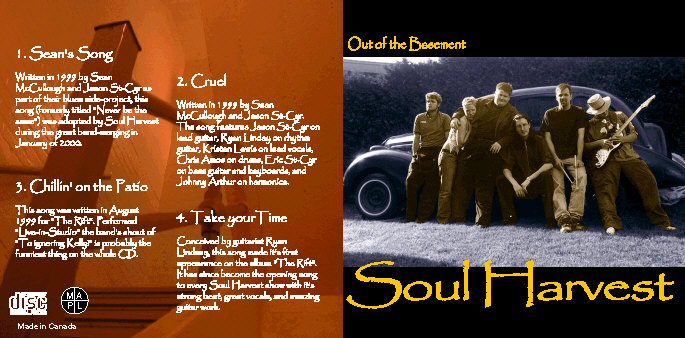

Album: Out of the Basement EP
Lyrics by: Jason St-Cyr
Music by: Jason St-Cyr
Performed by: Soul Harvest
Recorded: July 8th, 2000 at BS Trax Studios in Dunrobin, Ontario

|
Clip [N/A]
|

|
Download
|

|
CD INFO
|
|
Lyrics and Story
"Darling you've been telling me lies
And honey I've gotta get up and say goodbye
Cause baby you're cruel
You're so mean to me"
Written in 1999 by Sean McCullough and Jason St-Cyr as part of their blues side-project, this song was adopted by Soul Harvest during the great band-merging in January of 2000. The song features Jason St-Cyr on lead guitar, Ryan Linday on rhythm guitar, Kristen Lewis on lead vocals, Chris Amos on drums, Eric St-Cyr on bass guitar and keyboards, and Johnny Arthur on harmonica. This track is a sample from the newly recorded Soul Harvest demo, and will be on the upcoming SH CD due out by the end of 2000.
|